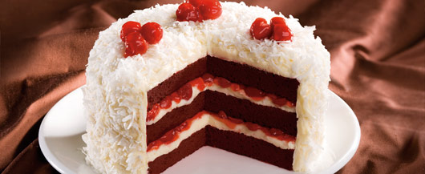

Cake Recipes
red velvet
for a design you can put some cherrys on top!

Ingredients
- ½ c. unsalted butter
- 1½ c. sugar
- 4 large egg yolks
- 3 tbsp. red food coloring
- 1½ tsp. vanilla extract
- ¼ c. cocoa
- 1 tsp. salt
- 1 c. Buttermilk
- 2¼ c. sifted cake flour
- 1 tsp. baking soda
- 1 tsp. white vinegar
Make the batter: Preheat oven to 350 degrees F. Using a small brush, lightly coat two 9-inch cake pans with butter or vegetable-oil cooking spray. Dust the pans with flour, tap out any excess, and set aside.
In a large bowl, using a mixer set on medium-high speed, beat the butter and sugar until light. Add the yolks and continue to beat for 1 more minute. In a small bowl, stir the food coloring, the vanilla, and the cocoa together.
Reduce mixer speed to low and add the cocoa paste to the batter. In a glass measure, mix the salt with the buttermilk and add it to the batter by thirds, alternating with the flour. In another small bowl, mix the baking soda with the vinegar and blend into the batter.
Bake the cake: Divide the batter equally between the pans and spread evenly. Bake on the middle rack of the oven until a tester inserted in the center of each layer comes out clean -- about 30 minutes. Cool in the cake pans on a wire rack for 15 minutes.
Using a knife, loosen cake layers from the sides of the pans and invert the layers onto wire rack to cool completely.
Ice the cake: Use a serrated knife to split each layer into 2 even layers. Line the edges of a cake plate with 3-inch-wide strips of waxed or parchment paper and place a cake layer, trimmed side down, on top.
Evenly spread 1 cup of icing over the layer and repeat with 2 other layers. Top with the final layer and cover the top and sides with remaining icing.
Directions:
Make the batter: Preheat oven to 350 degrees F. Using a small brush, lightly coat three 9-inch cake pans with softened butter or vegetable-oil cooking spray.
Dust with flour and tap out any excess. Set aside.
In a medium bowl, combine the flour, baking soda, baking powder, cinnamon, nutmeg, and cloves. Set aside.
In a large bowl, using a mixer set at medium-high speed, beat the butter for 1 minute. Add the sugar and continue to beat until blended. Add the eggs and vanilla and beat for 2 more minutes.
Reduce speed to low and add the flour mixture by thirds, alternating it with the applesauce and ending with the dry ingredients.
Bake the cake: Divide the batter equally among the pans and spread evenly.
Bake on the middle rack of the oven until a tester inserted in the center of each cake layer comes out clean -- 35 to 40 minutes. Cool in the cake pans on a wire rack to room temperature.
Using a knife, loosen the cake layers from the sides of the pans and invert the layers onto the wire rack.
Finish the cake: Place one cake layer on a cake plate or stand. Spread half of the Cinnamon Whipped Cream on the layer. Place a second layer over the first and repeat.
Top with the final layer and sprinkle with confectioners' sugar, if desired, and serve. Store refrigerated for up to 4 days.
INGREDIENTS
apple Cupcakes:
- 1 box white cake mix
- 1 c. apple juice from frozen concentrate (save 1 1/2 Tbsp of the concentrate, undiluted, for icing)
- ¼ c. unsweetened applesauce
- 1 Golden Delicious apple
- 1 large egg
- 2 large egg whites
Frosting:
- 1 package 1/3-less-fat cream cheese (Neufchatel)
- 1½ tbsp. Frozen Apple Juice Concentrate
- 1 box confectioners' sugar
directions:
Heat oven to 350ºF. You'll need 24 muffin cups lined with paper or foil cups.
Make Cupcakes: Combine cupcake ingredients in a large bowl. Beat with a mixer on low speed until ingredients are moistened. Increase speed to medium and beat 2 minutes, until batter is smooth.
Fill muffin cups with a scant 1/4 cup batter. Bake 22 minutes or until a pick inserted in centers comes out clean. Cool in pan on rack.
Make Frosting: Beat cream cheese and apple juice concentrate with a mixer just until smooth. Beat in confectioners' sugar on low speed to mix; increase speed to medium and beat until well blended, about 1 minute more (icing will be soft).
Divide frosting into thirds. Tint each to desired shade with brown, green and yellow food colors. Spread frosting on cupcakes. Store cupcakes in refrigerator.
INGREDIENTS
- 1 box French vanilla cake mix
- 1½ c. light unsweetened coconut milk
- 3 large eggs
- ¼ c. canola oil
- 1½ tsp. each coconut and vanilla extract
- For Rose Petal Cupcakes: canned vanilla frosting; red
liquid or gel food color; pastry bag with large star tip; light corn syrup; clean artist’s brush; small fresh pink roses, rinsed and patted dry; granulated sugar
DIRECTIONS
Heat oven to 350°F. You'll need 24 regular-size muffin cups lined with paper or foil liners.
Beat cake mix, coconut milk, eggs, oil and extracts in large bowl with mixer on medium speed 2 minutes or until blended and smooth. Divide among muffin cups.
Bake 20 to 22 minutes until a wooden pick inserted in centers comes out clean. Cool in pan on wire rack 5 minutes before removing cupcakes to rack to cool completely.
Plan ahead: You can bake cupcakes up to 2 days ahead; store covered at room temperature. Decorate, cover and refrigerate up to 1 day ahead.
Rose Petal Cupcakes: Tint frosting pastel pink and pipe a swirl on top of cupcakes. Thin some corn syrup with water; lightly brush on rose petals. Toss in sugar. Arrange petals on top of frosting swirl as shown.
these are a few videos: